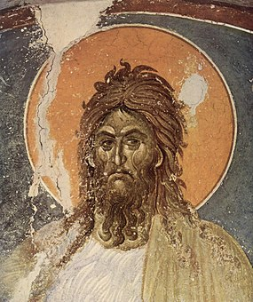
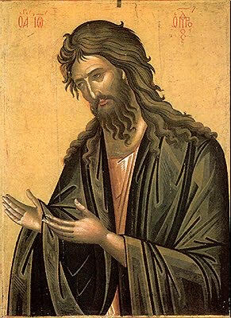
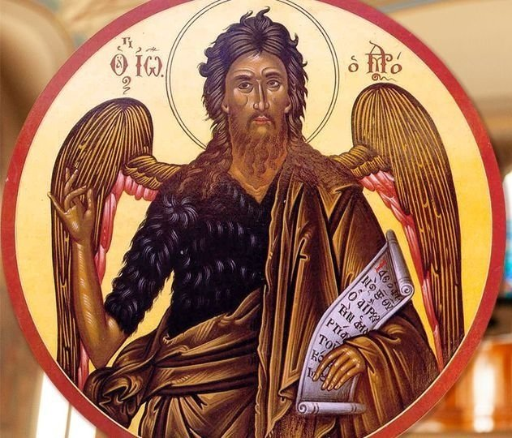

Overview
John the Baptist is a major prophet of the Abrahamic religions (Judaism, Christianity, and Islam).
Best described by others as (Matt 3:3):
"This is the one spoken of by the prophet Isaiah: “The voice crying in the wilderness: ‘Prepare the way of the Lord, make His paths straight.’” (Isa 40:3)
And by himself also the same way:
"I am the voice crying in the wilderness: "Make straight the way for the Lord..." (John 1:23)
Main Teaching
"Repent, for the kingdom of heaven is at hand." (Matt 3:2)
Main Warning
"Produce fruit in keeping with repentance. And do not begin to say to yourselves, ‘We have Abraham as our father.’ For I tell you that out of these stones God can raise up children for Abraham." (Luke 3:8)
Pictures
Here are some images attempting to portray him:
|  |  |  |
|---|---|---|
| Serbian Gračanica Monastery, Kosovo | Greek Orthodox Church, Pueblo, CO, USA | St. Volodymyr Cahedral of Toronto, Canada |
Known For
Baptizing with water for the washing away of sins as a vow of repentance and start of a new life of purification and efforts to "sin no more".
"I baptize you with water for repentance."
(Matt 3:11)
"People went out to him from Jerusalem and all Judea
and the whole region...
(Matt 3:5)
...they were baptized by him in the Jordan River,
confessing their sins."
(Matt 3:6)
John baptized even Jesus Christ and recognized him as "the Lamb of God", a divine sacrifice for the sins of the entire humanity, so that God would prolong the days of the human race with a chance to earn mercy through repentance and faith in Jesus, the "Beloved Son" of God.
"John saw Jesus coming toward him and said, “Look, the Lamb of God, who takes away the sin of the world!" (John 1:29)
"As soon as Jesus was baptized...the heavens opened and
the Spirit of God descended like a dove on him...
(Matt 3:16)
...and a voice from heaven said,
“This Is My Beloved Son, In Whom I Am Well Pleased.”
(Matt 3:17)
Scripture
Quotes from the Bible and Quran dedicated to his life and teaching [commentary or notes in square brackets]:
| Event | Bible | Quran |
|---|---|---|
| Birth /around 1st century BC/ |
"In the time of Herod king of Judea there was a priest named Zechariah, who belonged to the priestly division of Abijah; his wife Elizabeth was also a descendant of Aaron [the brother of Moses]. Both of them were righteous in the sight of God, observing all the Lord’s commands and decrees blamelessly. But they were childless because Elizabeth was not able to conceive, and they were both very old." "Once when Zechariah... was serving as priest before God... an angel... appeared to him, standing at the right of the altar... When Zechariah saw him, he was startled and was gripped with fear. But the angel said to him: “Do not be afraid, Zechariah; your prayer has been heard. Your wife Elizabeth will bear you a son, and you are to call him John." "He will be a joy and delight to you, and many will rejoice because of his birth, for he will be great in the sight of the Lord. He is never to take wine or other fermented drink, and he will be filled with the Holy Spirit even before he is born. He will bring back many of the people of Israel to the Lord their God. And he will go on before the Lord, in the spirit and power of Elijah, to turn the hearts of the parents to their children and the disobedient to the wisdom of the righteous—to make ready a people prepared for the Lord.” Zechariah asked the angel, “How can I be sure of this? I am an old man and my wife is well along in years.” The angel said to him, “I am Gabriel. I stand in the presence of God, and I have been sent to speak to you and to tell you this good news. And now you will be silent and not able to speak until the day this happens, because you did not believe my words, which will come true at their appointed time.” |
God chose Adam, and Noah, and the family of Abraham, and the family of Imran [father of Mary, mother of Jesus], over all mankind. [When Mary was born]...the Lord entrusted her to the care of [the priest] Zechariah. "Zechariah prayed to his Lord; he said, “My Lord, bestow on me good offspring from Your presence; You are the Hearer of Prayers.” Then the angels called out to him, as he stood praying in the sanctuary: “God gives you good news of John; confirming a Word from God, and honorable, and moral, and a prophet; one of the upright.” He said, “My Lord, how will I have a son, when old age has overtaken me, and my wife is barren?” He said, “Even so, God does whatever He wills.”" A mention of the mercy of your Lord towards His servant Zechariah. When he called on his Lord, a call in seclusion. He said, “My Lord, my bones have become feeble, and my hair is aflame with gray, and never, Lord, have I been disappointed in my prayer to you. “And I fear for my dependents after me, and my wife is barren. So grant me, from Yourself, an heir.To inherit me, and inherit from the House of Jacob, and make him, my Lord, pleasing.” “O Zechariah, We give you good news of a son, whose name is John, a name We have never given before.” He said, “My Lord, how can I have a son, when my wife is barren, and I have become decrepit with old age?” He said, “It will be so, your Lord says, ‘it is easy for me, and I created you before, when you were nothing.’” He said, “My Lord, give me a sign.” He said, “Your sign is that you will not speak to the people for three nights straight.” And he came to his people, from the sanctuary, and signaled to them to praise morning and evening. |
| Life /around 30-33 human years/ |
"His father Zechariah was filled with the Holy Spirit and prophesied:" "And you, my child, will be called a prophet of the Most High; for you will go on before the Lord to prepare the way for him, to give his people the knowledge of salvation through the forgiveness of their sins, because of the tender mercy of our God, by which the rising sun will come to us from heaven to shine on those living in darkness and in the shadow of death, to guide our feet into the path of peace.” "And the child grew and became strong in spirit; and he lived in the wilderness until he appeared publicly to Israel." "In the fifteenth year of the reign of Tiberius Caesar—when Pontius Pilate was governor of Judea, Herod tetrarch of Galilee, his brother Philip tetrarch of Iturea and Traconitis, and Lysanias tetrarch of Abilene — during the high-priesthood of Annas and Caiaphas, the word of God came to John son of Zechariah in the wilderness. He went into all the country around the Jordan, preaching a baptism of repentance for the forgiveness of sins." |
[It is believed that Mary was a miracle child born to a childless couple after the mother prayed and promised to dedicate the child to God's service. Zechariah, the priest, who was taking care of Mary was also childless and praying. Abraham and his wife Sarah, were also childless until a very old age when their only son Isaac, a miracle child was born. Abraham is the founding father of the three Abrahamic religions - Judaism, Christianity and Islam, more than 4 billion people on Earth as of 2020. (Religions)] “O John, hold on to the Scripture firmly,” and We gave him wisdom in his youth. And tenderness from Us, and innocence. He was devout. And kind to his parents; and he was not a disobedient tyrant. And peace be upon him the day he was born, and the day he dies, and the Day he is raised alive. |
| Death /around AD 30/ |
"But when John rebuked Herod the tetrarch because of his marriage to Herodias, his brother’s wife, and all the other evil things he had done, 20 Herod added this to them all: He locked John up in prison.
Herod himself had given orders to have John arrested,
and he had him bound and put in prison. He did this because of Herodias,
his brother Philip’s wife, whom he had married.
For John had been saying to Herod,
“It is not lawful for you to have your brother’s wife.”
|
[nothing in the Quran] |
| Teachings /and relation to Jesus/ |
"John said to the crowds coming out to be baptized by him,
"Jesus began to speak to the crowd about John:
|
[nothing in the Quran] |
References
Wikipedia Article on John the Baptist
Bible in English
Quran in English